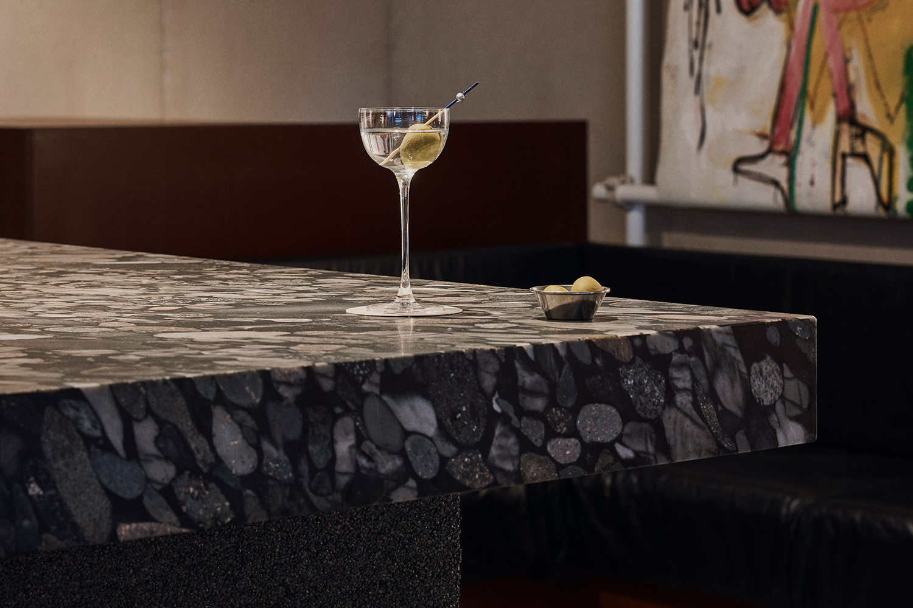

Based in Sydney and Brisbane, our dynamic studio is increasingly active in hospitality, retail, workspace and residential projects. Genshin provides detailed and unique design solutions for a range of different project types.
We offer an extensive list of interior design services to take a project from concept to completion.
